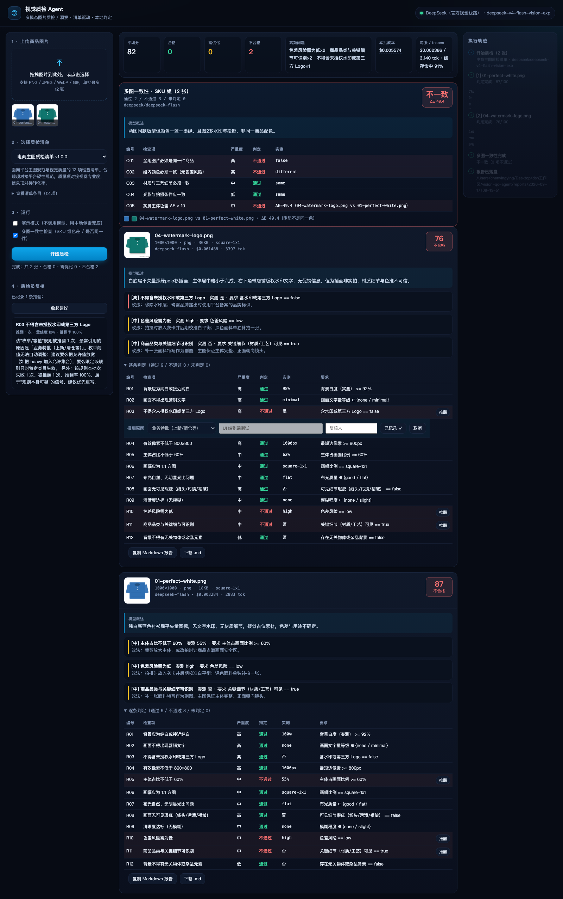

电商商品图有硬性质检规范，人工抽检几百张要数小时，不同人判得还不一样。这个工具的核心设计只有一句话： 让多模态模型只负责"看"，把"判罚"交给一段可审计的规则代码。 下面全部是真实运行的结果，不是示意图。
用 deepseek-v4-flash-vision-exp 对 6 张样例图的真实批量调用结果 —— 平均 77 分，4 张判定不合格。左侧是质检清单与复核记录，中间是逐条规则判定表，右侧是模型的执行轨迹。

截图较长，已裁切 —— 下方按张展示真实判定结果
每张图固定调用 1 次视觉模型，12 条规则共用这一次调用。分数为 0–100，按规则严重度加权计算。
这是整个项目的核心取舍，也是面试里我最想讲的一件事。
一次调用返回 40+ 个归一化字段，而不是一句结论。字段词表由事实目录统一定义，提示词、界面、报告三处共用，不存在"改了清单忘了改提示词"的漂移。
判罚在纯 JavaScript 里执行 —— 每个结论都能追到具体字段和阈值，改标准只需改一份 JSON，不需要改代码、不需要重训、不花一分钱 token。
成本是采购和运营一定会问的问题，所以它在项目里被算到"每一张图多少钱"。
所有规则共用同一次视觉调用，规则数量再增加也不增加成本；规则引擎本身是本地纯函数。
SHA-256 定键，同图重跑秒出，调阈值时可以反复试而不重复计费。
无 API Key 时自动进入兜底模式，用本地像素指标推断事实，并在报告里明确标注为兜底估计，绝不冒充模型判断。
这些是项目 README 里主动写明的限制，面试被追问时我会照实回答。
真正的色差需要色卡与标准光源，单图里只是风险提示；只有组内色差才用得上实测 ΔE。
花色或渐变面料会被平均成中间色，此时 ΔE 偏大属于误报；更严谨的做法是比色直方图而非均值。
这两类图的实测指标会缺失，规则降级为「未判定」并提示人工复核 —— 宁可说不知道，也不猜。
实测同一张 500px 的图两次调用得到 88「需优化」与 87「不合格」，分数只差 1 分但结论不同。修法：降低温度，或只对临界样本多次采样取多数。
不是真实商家数据，所以「细节不可辨识」这类判断在样例上偏严格；目前也还没有真实使用方。
图片多了会顶到上下文与成本上限（当前单批上限 12 张），尚未做跨批次的 SKU 一致性。
项目零第三方依赖，任何装了 Node 20+ 的机器都能直接启动。
cd vision-qc-agent npm start # 打开 http://127.0.0.1:4599 # 无需 npm install（零依赖）；无 API Key 会自动进入演示兜底模式